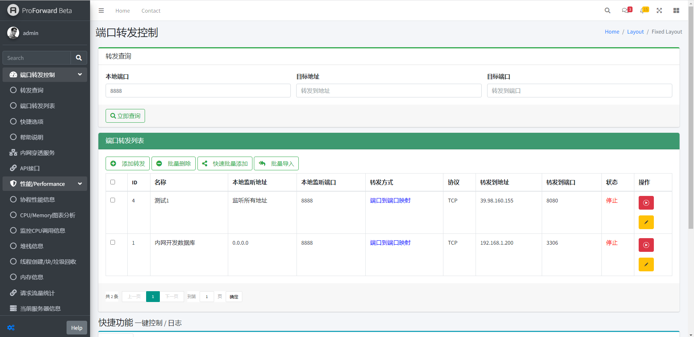
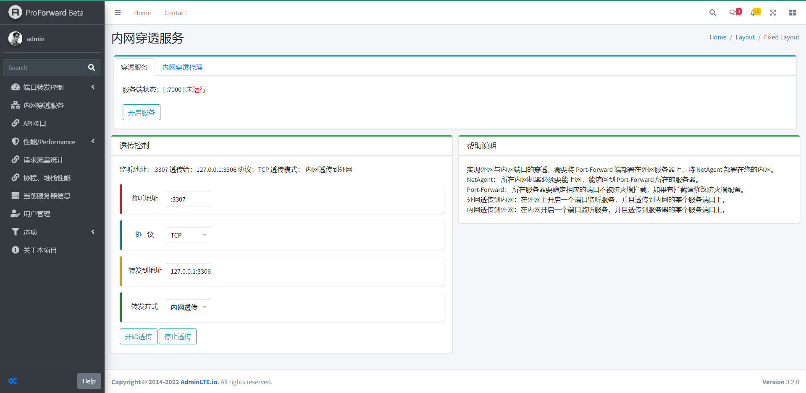
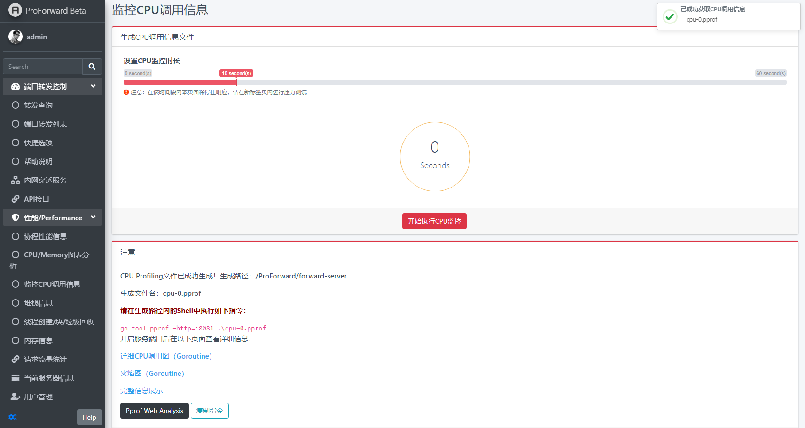
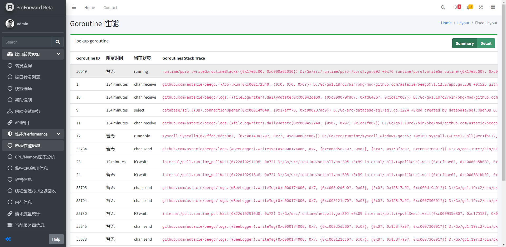
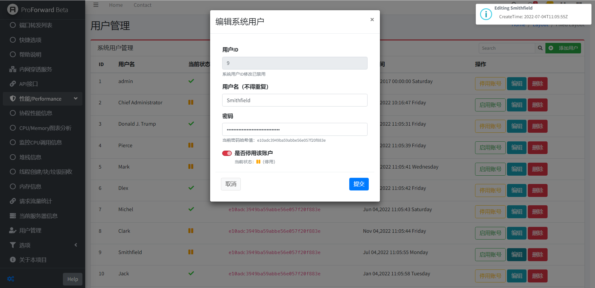

Note:
最新可见GitHub。简介
本项目使用Golang语言和Beego Web框架开发了一套支持高并发特性、支持多端口功能、跨平台且开放源代码的内网渗透代理转发系统，并内置实时性能监测模块和系统管理模块。
端口转发模块

此模块为端口转发功能的控制端，包含四个子模块，分别为转发查询、端口转发列表控制、快捷功能以及帮助说明。 在转发查询中可根据本地端口、目标地址或端口查询特定的端口转发任务； 端口转发列表会在数据库中匹配显示所有符合条件的端口转发任务并自动分页处理， 显示每个转发任务的实时状态和详细信息，并可在操作栏中控制启停状态或编辑该任务细节。 在该子模块提供四个功能按钮，分别可以添加转发任务（需手动开启)，框选任务批量删除，单次添加多个任务以及批量导入以特定符号分隔的规则数据。 对于每条端口转发/映射任务，可配置多分发选项，即将流量同时分发到多个指定IP端口； 并可配置该任务是否打开一键开启支持，方便在快捷菜单中一键管理，并可防止个别重要转发任务被一键控制所覆盖而造成误操作， 此外在开启该支持选项后通过编辑配置文件可让程序每次运行后就开始执行该转发任务。
为方便与其他系统集成以及使用命令行快速控制系统，该模块提供RESTful API，其中Auth鉴权密钥可在控制端服务器获取，使用GET 或 POST方式请求给定的接口地址，并提供本地监听的地址和端口、目标地址和端口以及网络协议等重要参数，鉴权通过后接口将返回JSON数据，包含状态码和结果消息内容。
在快捷功能子模块中包括一键控制和日志选项两个选项卡，前者可以一键开启或关闭数据库中打开一键开启支持的端口转发任务；在日志选项卡中可以控制是否开启详细日志记录功能，开启后会记录后台处理信息来帮助分析问题，而在遇到网络流量峰值等高负载情况下，可以临时关闭详细日志功能开关，以适当降低系统负荷。帮助说明包含系统的开源协议信息和支持信息，并可跳转至详细用户文档页面。
内网穿透服务

本项目实现的是C/S模式的内网穿透服务，Client部署在内网，能访问到代理服务器，代理服务器部署在外网上，需要确定相应的端口不被防火墙拦截。在进行外网穿透到内网过程中，需要在内网开启一个端口监听服务，并且能够透传到代理服务器的某个服务端口上。在进行内网穿透到外网过程中，需要在外网上开启一个端口监听服务，并且透传到内网的某个服务端口上。 此模块为内网穿透服务的代理服务器控制端，包含两个子模块，分别为代理服务器连接控制子模块和透传控制子模块。在前者的穿透服务选项卡中，可以查看代理服务器的状态以及服务端口，同时可以控制代理服务器开关状态；在内网穿透代理选项卡中，可以查看代理服务器与客户端的连接状态，同时可以刷新当前服务状态以及清空当前连接。在透传控制子模块中，可以设置监听地址、协议、转发地址以及转发方式，具备开始透传和停止透传功能，同时在该选项卡中能够显示当前的监听地址、透传地址、协议和透传模式。
此模块为内网穿透服务的代理服务器控制端，包含两个子模块，分别为代理服务器连接控制子模块和透传控制子模块。在前者的穿透服务选项卡中，可以查看代理服务器的状态以及服务端口，同时可以控制代理服务器开关状态；在内网穿透代理选项卡中，可以查看代理服务器与客户端的连接状态，同时可以刷新当前服务状态以及清空当前连接。在透传控制子模块中，可以设置监听地址、协议、转发地址以及转发方式，具备开始透传和停止透传功能，同时在该选项卡中能够显示当前的监听地址、透传地址、协议和透传模式。
实时性能监控模块

实时性能监控模块基于Golang Pprof运行时构建，包含协程性能信息、图表分析、CPU调用信息监控、堆栈信息、线程创建/块/垃圾回收以及内存信息监控等子模块。这些监控模块不仅可以实时检测系统的运行情况，也可以在开发过程中度量某个函数或方法的性能，通过性能测试的方式得知系统性能的瓶颈点所在。
在CPU调用信息监控子模块中，可以通过拖动控制条的方式设置监控时长，在启动 CPU 分析时，运行时(runtime)将每隔10ms中断一次，记录此时正在运行的Goroutines的堆栈信息，程序运行结束后，可以分析记录的数据找到最热代码路径(hottest code paths)。一个方法在性能分析数据中出现的次数越多，说明执行该方法的代码路径(code path)花费的时间占总运行时间的比重越大。通过对生成的Profiling文件进行处理，可以得到CPU调用图或上文提到的火焰图。内存信息监控是基于采样的，将记录堆内存分配时的堆栈信息，忽略栈内存分配信息，最终生成内存Profiling文件，经处理后同样可以得到图表。

在协程性能信息子模块中，可以得到当前系统运行的所有有关Goroutine的重要信息，通过切换摘要/详细两种显示模式可以更方便的获取有价值的信息。从图中可以看到，在大流量高负载情况下，系统将产生数万个Goroutine，该模块将选取其中部分展示其ID、阻塞时间、当前状态、堆栈跟踪信息等。通过该模块可以调查产生Goroutine过多的代码段以及追踪Goroutine泄露等情况，并可在高并发高负载情况下观察需要优化改进的代码端或方法。此外，实时性能监控模块还可追踪系统堆栈信息，观察线程创建及其对应的堆栈追踪，以及获取垃圾回收或块的有关信息。该模块不仅在后期系统优化和并发开发中起到关键作用，也能使得团队对系统性能和Golang体系架构有更深刻的理解。
用户管理与鉴权

为了实现高效的用户管理，团队以Beego架构的四个层级为出发点进行设计。最顶层为View层，在用户管理模块展示用户的ID、用户名、当前状态、密码哈希以及创建时间，具备添加用户、编辑用户、删除用户和权限控制功能；其次为Controller层，完成对由Router分发的http请求如添加用户、编辑用户、删除用户和权限控制等的业务模块流程控制，在此层里面要调用Service层的接口来控制业务流程；第三层为Service层，主要负责业务模块的逻辑应用设计，通过调用Service层相应的接口完成不同业务逻辑应用的处理，实现关于数据库处理的操作，对数据库进行数据持久化操作；最底层为Model层，存放用户实体类，对数据库中表的映射，当Service向Model层请求或操作数据时，它会从数据库中获取相应的数据，然后对数据进行加工最后返回给Service层。
团队采用Bootstrap和jQuery设计登录模块，在登录模块中同样划分四个层级，不同的功能模块，业务逻辑不同，在Controller层，会根据接收到的URL请求进行登录地址校验，在登录时进行登录权限检查，登录成功的同时完成Session的全局配置和保存的业务。
跨平台与高并发支持
本项目使用的语言是Golang，其代码可直接输出为二进制可执行文件。而且Golang拥有自己的链接器，不依赖任何系统提供的编译器和链接器，编译出的二进制可执行文件几乎可以运行在任何系统环境中。因此本项目具备跨平台交叉编译的特点，且部署方便，不易暴露代码。
本项目为了实现高并发的支持，摒弃了主流语言通过共享内存来进行并发控制的逻辑，采用的是一种用于描述两个独立的并发实体通过共享的通讯Channel进行通信的并发模型，即CSP并发模型，不以通过共享内存的方式来通信，而要通过通信的方式来共享内存。团队采用协程Goroutine与通道Channel实现CSP并发模型，其中Goroutine用于执行并发任务，Channel用于Goroutine之间的同步、通信。为了克服在并发编程中对线程的分配与调度问题，团队采用MPG线程模型，对两级线程模型进行改进，有效降低线程创建和管理的资源消耗，实现一个内核线程就可以起n个Goroutine，使得同样硬件配置的机器可用的用户协程成几何级增长，很好地提供协程并行计算的能力，保证了CPU的高利用率，使之能够更加灵活地进行协程之间的调度。